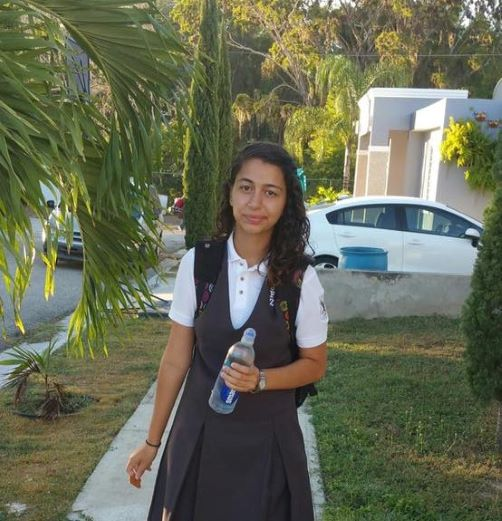

During my high school life, I have accomplished many things. First off my second year of high school, I transferred to a school in Puerto Rico and I developed my second language of spanish. I overcame a lot of challenges. For example, during my time in puerto rico, the language barrier was also a challenge for me. Before going to puerto rico, I did not speak one ounce of spanish. I struggled a lot to make friends and pass my classes. Another challenge I ran into was having to go to summer school for failing one of my classes. It was one of the last things I did in my time in Puerto Rico. After this year, I left Puerto Rico and came back to chicago. There were many issues trying to get back into a CPS high school because my credits werent alligning with the grade level I was supposed to be in. I had to get my credits translated at the CPS headquarters building in downtown and I missed my first week of my junior year of highschool. Junior year was a difficult year but none the less, I passed. I changed high schools my senior year of high school. When I made the transfer to my last high school, it probably changed my life. I made amazing friends that I still talk to today, I was able to be at peace, and I moved out of my moms house and started my adult life. I was able to graduate high school with my diploma and it was a great feeling.
